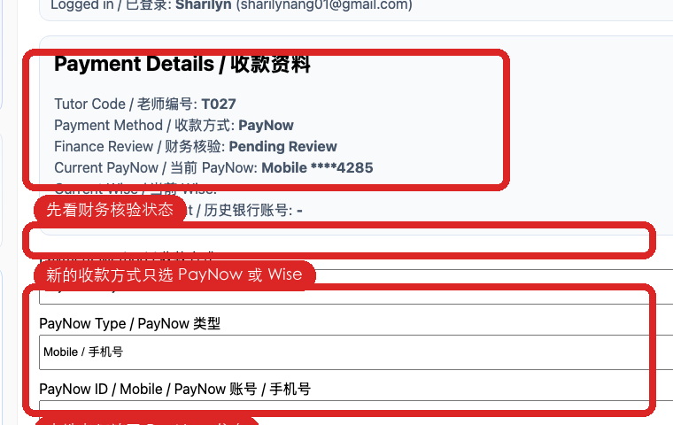
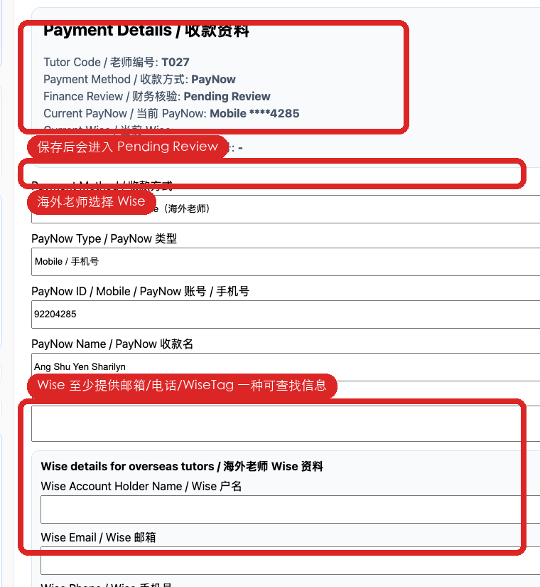

本流程只给老师使用。新的收款资料只支持 PayNow 和 Wise：本地老师填写 PayNow，海外老师填写 Wise。银行转账资料只保留历史查看，不再作为新填写方式。
This guide is for tutors only. New payment details support PayNow and Wise only: local tutors use PayNow, overseas tutors use Wise. Bank-transfer details are kept for legacy viewing only and are no longer a new submission method.
进入页面后，先看顶部卡片。这里会显示老师编号、当前收款方式、财务核验状态、当前 PayNow/Wise 和历史银行账号。
After opening the page, check the top card first. It shows your tutor code, current payment method, finance review status, current PayNow/Wise details, and legacy bank account.

| 字段 / Field | 怎么填 / What to enter |
|---|---|
| Payment Method | 选择 PayNow / PayNow。 / Choose PayNow. |
| PayNow Type | 选择 Mobile、NRIC/FIN、UEN 或 Other。 / Choose Mobile, NRIC/FIN, UEN, or Other. |
| PayNow ID / Mobile | 填写 PayNow 注册手机号或 ID，不要填写银行账号。 / Enter the PayNow-registered mobile number or ID. Do not enter a bank account number. |
| PayNow Name | 填写收款时显示的名字。 / Enter the name shown to the payer. |
| Note | 如果收款名和老师姓名不同，请写说明。 / If the payment name is different from your tutor name, explain it here. |
海外老师选择 Wise 后，应提供可以让财务在 Wise 查找到你的信息：Wise 邮箱、Wise 手机号、WiseTag / username 至少一种。
After choosing Wise, overseas tutors should provide information Finance can use to find them in Wise: at least one of Wise email, Wise phone, or WiseTag / username.

| 字段 / Field | 怎么填 / What to enter |
|---|---|
| Wise Account Holder Name | Wise 户名。 / Wise account holder name. |
| Wise Email | Wise 绑定邮箱或收款邮箱。 / Wise login or receiving email. |
| Wise Phone | Wise 绑定手机号，最好包含国家区号。 / Wise-linked phone number, preferably with country code. |
| WiseTag / Wise Username | 如果有 WiseTag，请填写。 / Enter your WiseTag or Wise username if you have one. |
| Country / Currency | 所在国家和希望收款币种。 / Your country and preferred receiving currency. |
| Wise Note | 其他说明，例如只能用邮箱查找。 / Extra notes, for example “can only be found by email”. |
表示财务还没有核验。保存后这是正常状态。 / Finance has not verified it yet. This is normal after saving.
看财务备注，修改后重新保存。 / Read the Finance note, update the details, and save again.
请在发工资或报销前更新。 / Update it before payroll or reimbursement processing.
联系 Admin 检查老师账号是否绑定老师档案。 / Ask Admin to check whether your account is linked to a teacher profile.